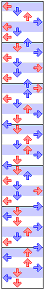

Skrevet av: bonzo (Torsdag 26. august 2004)
Dette
er en noe mer avansert guide for deg som føler at framgangen din
har stoppet opp, eller deg som vil framskynde den mer. Det kan også
være tips her for folk som allerede er gode men som vil ha enda
mer ut av maskina.
Lykke til! :-)
Hvordan bli en bedre spiller
Noen tips og retningslinjer.
Beginner til Standard
Denne er lett. Bare la være å gå tilbake til midten av
paden så går det av seg selv. Og ved alt som er hellig, IKKE
spill bare 5, 6, 7, 8 og I Want You To Want me, da gjør du deg selv
og alle rundt deg en stor tjeneste. Litt fordi det er lettere å ta
sanger på høye vanskelighetsgrader hvis du har prøvd
dem på lave vanskelighetsgrader tidligere, og litt fordi folk som
spiller mye og tilbringer en del tid ved maskina er grundig lei av dem fordi
nesten alle nybegynnere velger dem.
Standard til Difficult
Klarer du å bruke annenhver fot gjennom hele dette partiet er du kryssekongen
Dette er en overgang som i de fleste tilfeller går av seg selv hvis
du spiller en del.

Likevel er det en del ting du må huske på. Når det kommer
1/8 piler (halvbeatspiler) så ta alle pilene, de er en veldig dårlig
vane å bare ¼ pilene, dette er kanskje ikke så veldig
vanlig men jeg har sett folk gjøre det. Det kan i utgangspunktet
virke fornuftig, for man mister nesten ikke energi hvis man tar to av tre
1/8 i en klynge, men det kommer ikke til å gå på lange
klynger av piler, og man taper uansett mange poeng på det. Det er
også en god tid til å begynne å bruke mest mulig annenhver
fot hele tiden og krysse, for de som ikke er fortrolig med det uttrykket,
vil det si å kunne vende beina nokså langt over, f. eks hvis
det er 1/8 piler som går venste-ned-høyre-ned-venste, og starte
med venstre og bruke annenhver fot gjennom hele partiet, altså ikke
ha kroppen vendt mot skjermen hele tiden. Det gjør det lettere å
få mer kontroll og dermed mer poeng. Altså, i det hele, bli
litt mer fortrolig med paden. Prøv og lære å lese piler
så fort som mulig, ved å spille raske sanger på standard.
Difficult til Expert
Denne er litt vanskelig for mange. Det beste er å starte med lette
sanger som Remember You, Higher, 5, 6, 7, 8 og Keep on moving. Du kan også
spille vanskelige diff. sanger som Healing Vision (Angelic Mix), Crash!,
Trip Machine Climax og Jam Jam Reggae, jeg velger å ikke nevne Max
300 fordi den er betydelig mye vanskligere enn de andre, og vanskeligere
enn en god del expert-sanger. Prøv å ta vanskeligere sanger
på final stage, fordi da mister du ingen sanger om du taper. Nå
blir det også viktig å prøve åhøre hvilken
lyd stegene går etter (stemme, tromme, piano etc.), hvis du klarer
det, er det mye lettere å vite når du skal tråkke.
Max 300 Expert. The final showdown
Hvordan pokker skal man klare den?!?
Kort svar: Øve! Øve mye!
Lengre Svar. De færreste som har spilt så lenge at de prøver
på den mangler teknikken til å klare den, det sitter som regel
i utholdenheten. Tren på sanger som Healing Vision (Angelic mix),
Afronova (med mindre du klarer å krysse på den), So Deep og
End of the Century, så kommer kondisen etter hvert. Jeg har også
hørt at det er lurt å holde pusten mens man spiller for å
holde ut lenger, men jeg har aldri prøvd det, så ikke saksøk
meg hvis du besvimer av oksygenmangel eller noe i den dur. Noe annet du
kan gjøre for å holde ut lenger er rett og slett å løfte
beina lite. Mitt personlige tips er og spille den en del ganger på
final stage (da mister du ingen sanger om du taper), og når du føler
at du har kondisen til det så tar du den på første stage,
da er du mest uthvilt og du mister mye mindre energi på bommer enn
på final stage. Ellers, hvis du har muligheten til det, er jo det
beste å spille sammen med noen som klarer den. Og til slutt; hvis
du er desperat etter å klare den kan du holde fast i railen, men det
gir ikke samme gode følelsen (i hvert fall ikke i like stor grad)
når du klarer sangen, og da får du heller ikke samme følelsen
når du senere klarer den uten rail.
Hvordan få
mer perfect
Du får en god del mer perfect av deg selv etter hvert som du spiller
mye, men her noen tips for å få enda flere
- Hør på sangen. denne er ganske opplagt. Hør på
sangen å prøv å finne rytmen i den, gå gjerne
også litt rundt på paden og prøv å fin rytmen
får stepsa kommer
- Ikke begynn for tidlig. Vanlig problem, det kommer et langt stream-parti
som ser vanskelig ut, så da begynner man litt for tidlig, for
å ha mer tid til å rette opp feil. Ikke gjør det
- Bruk små sko med tynne såler, de eier!
- Bruk samme sko hele tiden. Det virker kanskje litt søkt, men
hvis du er vent til å spille meg sko med tynne såler blir
det plutselig uvant å spille med f. eks varme vintersko
- Dans alltid på hælene eller alltid på tærne,
det er gjerne så små marginer det går på
- Øv!
- Øv mer!
Et siste tips
Hvis du har problemer med å holde på freeze-piler, enten fordi
paden er dårlig, du ikke har så god balanse eller fordi du
rett og slett er en lettvekter, kan du prøve å sprette opp
å ned i takt med musikken, man må nemlig ikke holde den nede
hele tiden for å holde de
FAQ
Hvor er det en dansemaskin i nærheten av meg?
Svar: Klikk her og let
:-)
Hvor mange sanger er det på en Euromix 2 maskin?
Svar: 67, 68 hvis man regner 5, 6, 7, 8 som en sang.
Spørsmål: Hvor mange Dancing Stage-maskiner finnes
det i Norge?
Svar: 52
Spørsmål: Hvordan kommer jeg inn på highscore-lista?
Svar: Du må spille nonstop. Easy 1, Medium 1 eller Hard 1. Ja, og
du må være bedre enn de andre på lista da.
Spørsmål: Hva kaller man en som driver med Dancing
Stage?
Svar: Det er ikke noe offisielt navn men forslag som har kommet opp er:
DDRere
Spenstige duder/dudetter
Interaktiv bevegelsessimulatorspillere
DDR-dansere
Dansemattefreaker
Dansere
DDR-folk
DDR-spiller
DDR-dansere
Loco-bavian-on-syre
Dansespillere
Dansespillspillere
Spilledansdansere
Spilledansspillere
Dansespilldansere
DDR-dansespillspillere
DDR-spilldansere
Bæ
DDR-Bæ
Freaks
Er det juks å holde fast i håndrailen?
Svar: Å vende seg til å holde fast i railen er ikke noe jeg
vil anbefale, siden det ikke er lov i konkurranser, men det er opptil
hver enkelt spiller hva han/hun har lyst til å gjøre.
Finnes det et Euromix 2 data/PlayStation/Xboxspill?
Svar: Nei. Men det finnes andre Dancing Stage-spill. Til PlayStation 1
er det DS Euromix 1 og DS Disney Mix, til PlayStation 2 er det DS Megamix
og DS Fever til
Xbox er det DS Unleashed og til PC er det en simulator som kalles Stepmania
Finnes det bilder av stegene til sanger på Internett?
Svar: www.ddrfreak.com og www.ddruk.com
har såkalte stepchartgeneratorer. Sesse har også lagd en stepallokator
som forteller deg hvilket bein du burde bruke på hver pil hvis du
har en .dwi fil http://www.samfundet.no/~sesse/stepallocator.html
Og hvor finner jeg en sånn .dwi fil?
Svar: jeg har etter hvert blitt innforstått med at det ikke er lov
å oppgi det på denne siden, så alt jeg kan si er at
google er en venn i nøden.
Det er noe galt med maskina! Hva skal jeg gjøre?
Svar: Send en email : service@positivegaming.com
og forklar hva som er galt så blir det nok fort fikset.
Hvor god må man være for å være med i
Challenge Cup og hvor mye koster det?
Svar: Du må klare å stå på paden, altså,
alle som vil og er medlem i DDRNorway kan være med. Det koster 50
kr.
Og hvordan blir man medlem i DDRNorway?
Svar: Gå inn på her
og følg instruksjonene der.
Hvorfor står ikke det jeg lurer på her?
Svar: Sansynligvis fordi det ikke er blitt med i denne F.A.Q-en. Spør
gjerne på forumet, og om du finner noe fornuftig svar kan du legge
det inn på vårt eget leksikon, her.
Hva er meningen med livet?
Svar: Dancing Stage
Ta en titt på DDR Norway sitt eget leksikon for mer informasjon :-)
|